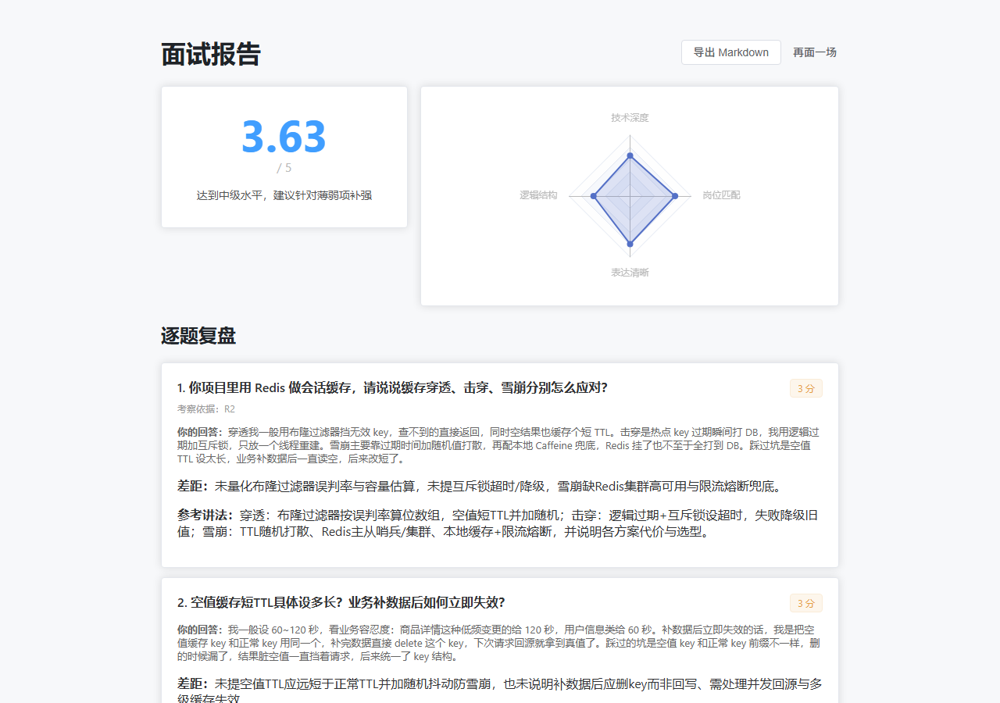
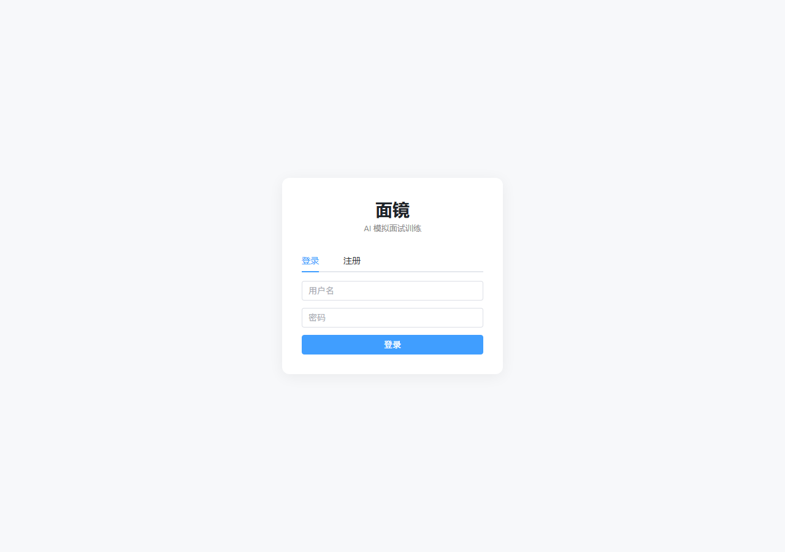
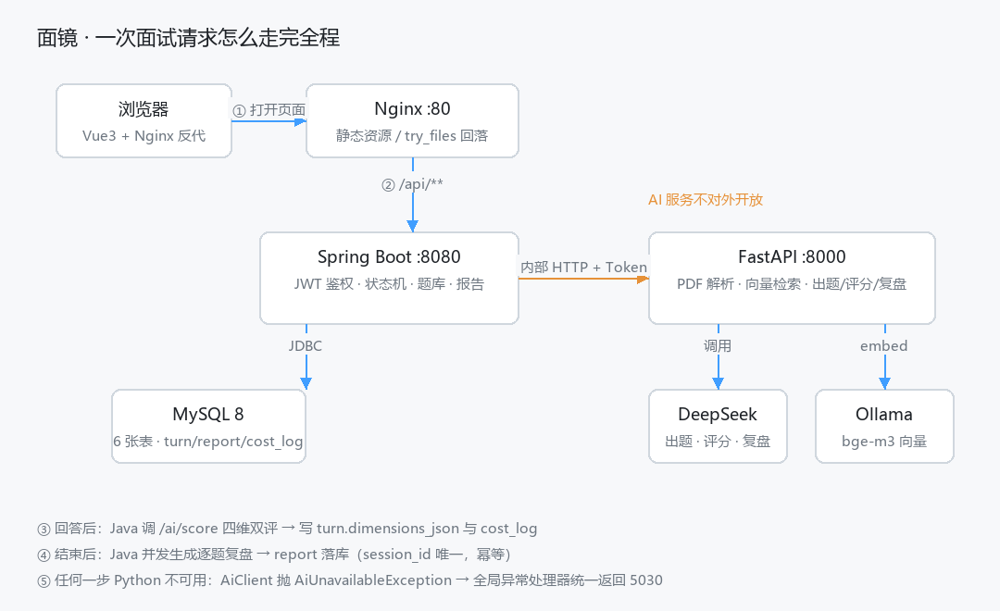

不是模板数字：每个都能在仓库里找到复现脚本（详见 docs/eval-log.md）。
截图由 scripts/capture-screenshots.mjs 驱动无头浏览器自动生成，数据来自一场真实面试。


业务用 Java、AI 用 Python，两侧靠一份内部接口契约 + 内部令牌解耦；AI 服务不连数据库，所以可无状态扩容。

降级链路：Python 挂掉 → Java 秒级返回 5030（不是卡 90 秒）；DeepSeek 超时 → 自动切本地 Ollama；
简历抽不出 → needsReview=true 但面试照常进行。
面试能讲满十分钟的部分。
Java 管 JWT、状态机（8 题上限 / 追问深度 2 / 越权校验）、事务；Python 管解析、检索、出题评分。
口径文件 + 温度归零 + 先列关键点 + 四维双评取均值 + 证据必须是候选人原话。
追问必须含回答里的连续片段（短答 2 字 / 长答 3 字），不引用就丢弃并重出新题。
bge-m3 1024 维，同义句相似度 0.77–0.86、无关句 0.37；几百道题目测内存索引足够，不引向量库。
出题 / 评分 / 复盘三类调用全部落 cost_log，单场成本可查、可对比。
74 条测试用例（14 条脚本化）、密钥外置与启动自检、Nginx 安全头、备份与日志轮转。
需要 JDK 21、Python 3.12+、Node 20+、MySQL 8，以及一个 DeepSeek API Key。Ollama 可选（没装则检索降级，不影响主流程）。
# 1) 拉代码 + 填密钥 git clone https://github.com/liyi123104/mirror-ai-interview.git cd mirror-ai-interview copy .env.example .env # 填 DEEPSEEK_API_KEY # 2) 装依赖 cd ai && python -m venv .venv && .\.venv\Scripts\pip install -r requirements.txt && cd .. cd web && npm install && cd .. # 3) 建库导表 + 启动（Windows 一键） powershell -ExecutionPolicy Bypass -File scripts\init-db.ps1 -RootPassword 你的root密码 start.bat # 起来后打开 http://127.0.0.1:5180
Linux / macOS 没有 start.bat，按 README 手动起三个进程即可。